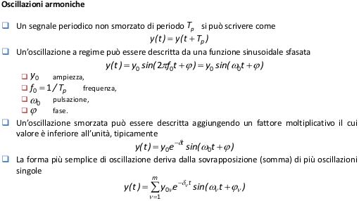

I metodi per l’individuazione dei guasti basati su modello del processo utilizzano le relazioni tra diverse variabili misurate per estrarre le informazioni sui possibili cambiamenti causati dai guasti.
- Non sempre, tuttavia, è possibile disporre di un modello del processo: in questi casi è necessario analizzare i segnali che sono acquisiti dal processo.
- Molti processi sono caratterizzati da un comportamento oscillatorio o ciclico (e.g. macchinerotanti, correnti alternate, ecc ...): i segnali risultanti, pertanto, sono di natura periodica.
- Altri processi, invece, sono del tutto casuali (e.g. rumore di attuazione, flussi di turbolenza,attività di una rete di utenti, ecc ...): i segnali risultanti, pertanto, sono di natura stocastica.
- Sia i segnali periodici, sia i segnali stocastici possono essere utilizzati per individuare guasti se esiste una correlazione tra modifica dell’andamento del segnale e guasto del processo.
